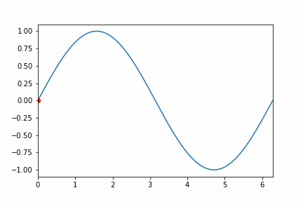

test-Gif-ok#
Gif sample#
mainly from matplotlib …#
# https://stackoverflow.com/questions/56423221/saving-animated-matplotlib-chart-to-gif
import os
import numpy as np
import matplotlib.pyplot as plt
import matplotlib.animation as animation
from matplotlib import rcParams
#%matplotlib qt
#%matplotlib tk
#%matplotlib
# configure full path for ImageMagick
# seems to work in iOS and macOS !!!
#rcParams['animation.convert_path'] = r'/usr/bin/convert'
TWOPI = 2*np.pi
fig, ax = plt.subplots()
t = np.arange(0.0, TWOPI, 0.001)
s = np.sin(t)
l = plt.plot(t, s)
ax = plt.axis([0,TWOPI,-1.1,1.1])
redDot, = plt.plot([0], [np.sin(0)], 'ro')
def animate(i):
'''
/var/folders/_y/zx724y_158bf6f_4nxr4dm540000gn/T/ipykernel_72553/3641039220.py:24: MatplotlibDeprecationWarning: Setting data with a non sequence type is deprecated since 3.7 and will be remove two minor releases later
redDot.set_data(i, np.sin(i))
/var/folders/_y/zx724y_158bf6f_4nxr4dm540000gn/T/ipykernel_72553/3641039220.py:24: MatplotlibDeprecationWarning: Setting data with a non sequence type is deprecated since 3.7 and will be remove two minor releases later
redDot.set_data(i, np.sin(i))
'''
redDot.set_data(i, np.sin(i)) # seems later would not support this
return redDot,
# create animation using the animate() function with no repeat
myAnimation = animation.FuncAnimation(fig, animate, frames=np.arange(0.0, TWOPI, 0.03), \
interval=100, blit=True, repeat=False)
# 0.01 quit slow
# 0.05
# save animation at 30 frames per second
#myAnimation.save('myAnimation.gif', writer='imagemagick', fps=30)
#plt.rcParams["figure.figsize"] = [7.50, 3.50]
#plt.rcParams["figure.autolayout"] = True
#dir_name = "C:/Windows/Temp/"
#dir_name = "image"
#plt.rcParams["savefig.directory"] = os.chdir(os.path.dirname(dir_name))
myAnimation.save('img/test-Gif-ok2.gif', writer='pillow', fps=30)
myAnimation.save('test-Gif-ok2.gif', writer='pillow', fps=30)
# seems default
plt.show()
/var/folders/33/krstvgns2rncl74r18tkv6_80000gn/T/ipykernel_30242/2052094205.py:36: MatplotlibDeprecationWarning: Setting data with a non sequence type is deprecated since 3.7 and will be remove two minor releases later
redDot.set_data(i, np.sin(i)) # seems later would not support this
/var/folders/33/krstvgns2rncl74r18tkv6_80000gn/T/ipykernel_30242/2052094205.py:36: MatplotlibDeprecationWarning: Setting data with a non sequence type is deprecated since 3.7 and will be remove two minor releases later
redDot.set_data(i, np.sin(i)) # seems later would not support this
/var/folders/33/krstvgns2rncl74r18tkv6_80000gn/T/ipykernel_30242/2052094205.py:36: MatplotlibDeprecationWarning: Setting data with a non sequence type is deprecated since 3.7 and will be remove two minor releases later
redDot.set_data(i, np.sin(i)) # seems later would not support this
# in code cell
import matplotlib.pyplot as plt
import matplotlib.image as mpimg
imgi2 = mpimg.imread("img/test-Gif-ok2.gif")
img2 = mpimg.imread("test-Gif-ok2.gif")
plt.imshow(imgi2) # but no animation
plt.imshow(img2) # but no animation
<matplotlib.image.AxesImage at 0x104788250>

## set working directory
in markdown one can try this:#

not working#
`


[SegmentLocal]("img/Gif-ok.gif" "segment")

[SegmentLocal](img/test-Gif-ok.gif "segment")
[SegmentLocal]("test-Gif-ok.gif" "segment")
`
work#

import os
x=os.getcwd()
os.listdir(os.getcwd())
print(f"{os.getcwd()=}")
print(f"{x=}")
print(f"{os.listdir(x)=}")
os.getcwd()='/Users/ngcchk/Documents/GitHub/gpd2-win-unity1/ipadred-rain/imgno_book1/imgnobk9'
x='/Users/ngcchk/Documents/GitHub/gpd2-win-unity1/ipadred-rain/imgno_book1/imgnobk9'
os.listdir(x)=['JB_logo.png', 'test-Gif-ok2.gif', '.DS_Store', 'media copy', 'requirements.txt', 'imgnobk9References.bib', 'MacB9i-matlib-sample-animations.ipynb', 'lines_4.mp4', 'MacB9c-test3.ipynb', 'teset_7_particle_box.mp4', 'MacB9e-test-Gif-ok.ipynb', 'introAnimate.md', 'MacB9-Animate.ipynb', 'nongui_backend.png', 'test-Gif-ok3U2Alex.gif', 'img', 'MacB9d-test-iter.ipynb', '_toc.yml', 'im_4.mp4', 'Less.png', '_build', '_config.yml', 'iter-ok1.gif', '.ipynb_checkpoints', 'MacB9e-test-Gif-ok-CopyForAlex.ipynb', 'MacB9f-test-Juno-2.ipynb', 'Mlp3-cook1.ipynb', 'main', 'MacB9h-DB7-sync.ipynb', 'myAnimation.gif', 'MacB9b-TestPhyMSUanimate.ipynb']
import platform
print(f"{platform.system()=}")
print(f"{platform.release()=}")
print(f"{platform.version()=}")
# ipad
'''
platform.system()='Darwin'
platform.release()='22.6.0'
platform.version()='Darwin Kernel Version 22.6.0: Wed Jun 28 20:51:42 PDT 2023; root:xnu-8796.142.1~1/RELEASE_ARM64_T8020'
'''
platform.system()='Darwin'
platform.release()='22.6.0'
platform.version()='Darwin Kernel Version 22.6.0: Wed Jul 5 22:22:52 PDT 2023; root:xnu-8796.141.3~6/RELEASE_ARM64_T8103'
"\nplatform.system()='Darwin'\nplatform.release()='22.6.0'\nplatform.version()='Darwin Kernel Version 22.6.0: Wed Jun 28 20:51:42 PDT 2023; root:xnu-8796.142.1~1/RELEASE_ARM64_T8020'\n"